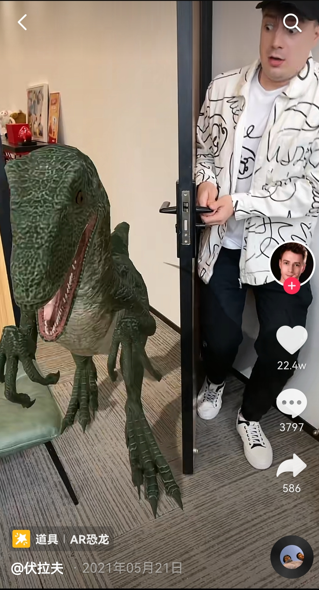
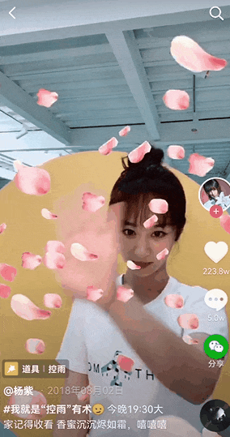
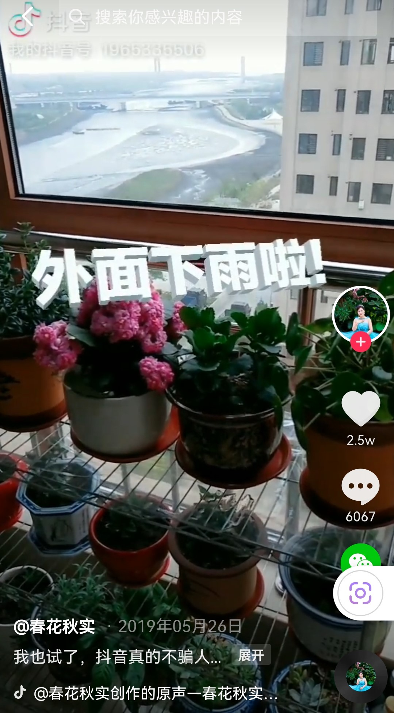
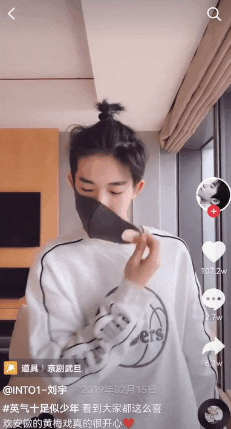

字节跳动短视频Effect SDK实习工作合集

项目属性
2018.06 - 2018.09 与 2019.03 - 2019.05期间，在北京字节跳动网络技术有限公司 · IES互娱研发部，先后作为特效研发实习生与技术美术实习生，参与应用于抖音火山等app的特效开发工作
项目分工
- 参与短视频Effect SDK部分功能重构，将AR、肢体粒子、控雨等分支功能以3D主体逻辑重新实现（配图时间为2022.03.27，部分素材未找到实习期间版本，以目前版本说明）：
  - AR文字视觉效果提升，含AO的自研引擎实现与动态变色Shader的内部Demo编写
 - 特效资源包配置及lua交互脚本编写（部分素材未找到实习期间版本，未配图）
 - 资源包新旧版本转换与自动生成小工具的实现等